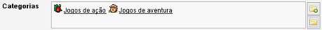
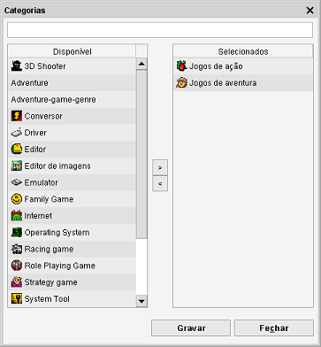

Campos multireferência
Com este tipo de campo pode atribuir múltiplas referências ao mesmo item.

Pode clicar em cada um dos itens listados para rever os detalhes (no exemplo acima podia clicar em Jogos de ação
e os detalhes da categoria seriam mostrados).
Se lhe faltar algum item pode criá-lo imediatamente.
Para adicionar um novo item clique em  . Vai abrir um novo
formulário de item onde pode intoduzir os valores. Clique em Gravar quando estiver satisfeito e o item será
adicionado à lista.
. Vai abrir um novo
formulário de item onde pode intoduzir os valores. Clique em Gravar quando estiver satisfeito e o item será
adicionado à lista.
Selecionar itens
Para atribuir e/ou remover itens, clique em  .
Abre o diálogo de atribuição.
.
Abre o diálogo de atribuição.

No lado esquerdo encontra os itens disponíveis (categorias, no exemplo acima). Estes itens não estão
atribuídos ao item e podem-lhe ser atribuídos. No lado direito são mostrados os itens já atribuídos
ao item.
Filtrar
Pode filtrar a lista, escrevendo no campo ao cimo da janela. A lista é filtrada enquanto escreve. A procura é feita por itens
cujo nome comece pelo texto introduzido. Se apagar o texto volta a mostrar toda a lista.
Selecionar itens
Faça duplo clique num item do lado esquerdo para o atribuir. Para remover um item atribuído, faça duplo clique
no item no lado direito.
Em vez do duplo clique, pode usar os botões '>' e '<'. Clique nos itens quer atribuir ou remover mantendo premida a tecla
Ctrl. A seguir prima o botão de seta correspondente.
Aplicar os itens selecionados
Clique em Gravar para gravar as alterações.